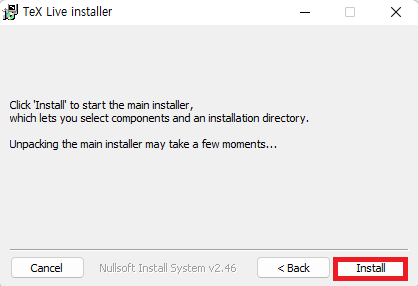

Section 1 / 1.1 LaTeX Installation
1.1.2 Option 2: TeX Live (slow)
Full installation — takes longer but no need to download packages later.
Step 1.
Search for TeX Live on Google and visit the website.

Step 2.
Download the installation file for your operating system.

Step 3.
Run the TeX Live Installer. On Windows, your account name must be in English.


Step 4.
After a short wait, the installer window appears. Click Install to proceed. (This may take a long time)

Step 5.
If TeX Live has been successfully installed, you will see the following screen. Click Close to complete the installation.